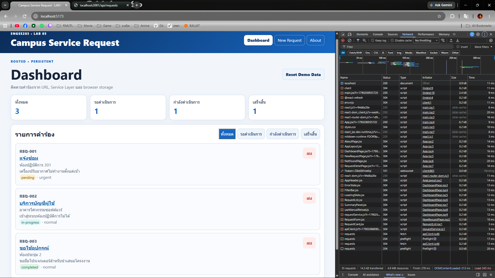
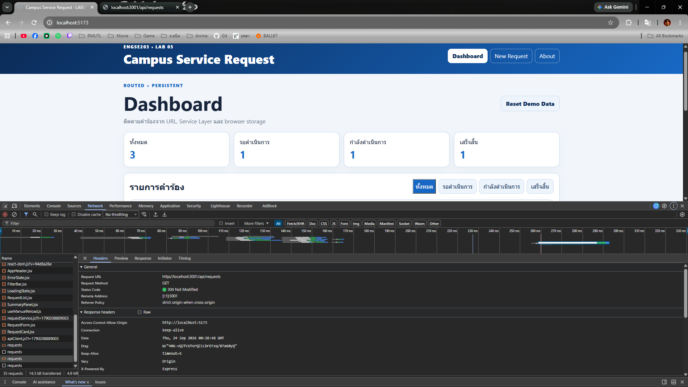
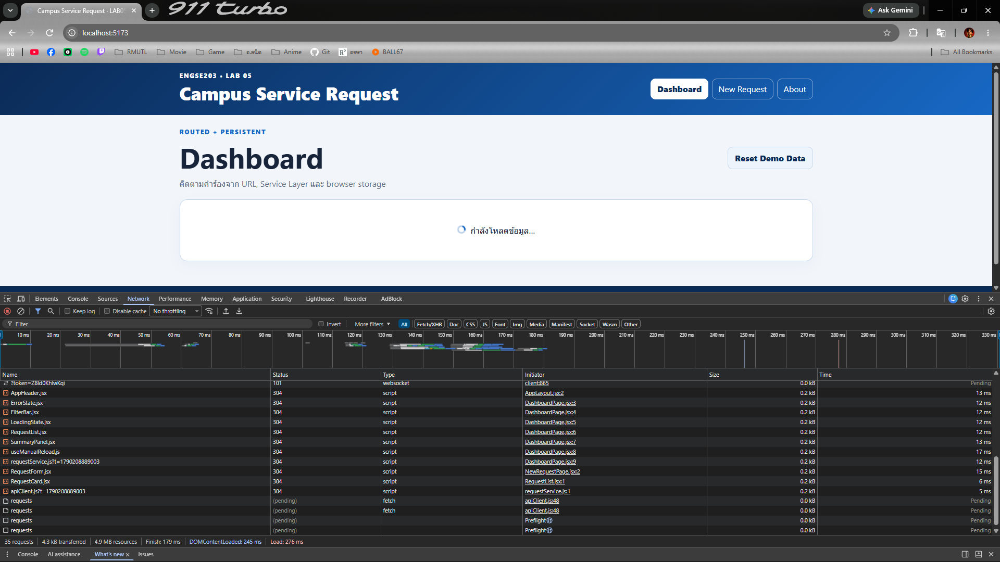

ผลลัพธ์และหลักฐาน
API tests ผ่าน 6/6, Week07 checker 35/36, frontend build ผ่าน; มีรายละเอียดรายการที่ยังไม่ผ่านในรายงาน การใช้งานเต็มระบบต้องเปิด API และ frontend พร้อมกัน
- เชื่อม React กับ Express ผ่าน apiClient, fetch และ environment config
- รองรับ CORS, preflight, PUT เปลี่ยนสถานะ และ API error handling
- มี API contract, automated tests และภาพหลักฐานจาก branch เดิม
- Pages แสดงรายงาน; API จริงใช้ Node.js ที่พอร์ต 3001 และ frontend ที่พอร์ต 5173
ผลการตรวจสอบ
| รายการ | ผล | คำสั่งและรายละเอียด |
|---|---|---|
| API automated tests | pass | npm test (starter/api)6/6 tests ผ่าน, 0 fail: GET, POST, validation, 404 และ CORS header |
| Week07 checker | partial | node check-week07.mjs (starter)35/36: ในห้อง 24/25, ที่บ้าน 8/8, Challenge 3/3; ขาด api/.env.example (checker ยังคืน exit code 0) |
| Frontend production build | pass | npm run build (starter/frontend)Vite build สำเร็จ 41 modules; ใช้ HashRouter และ base './' |
| Inherited frontend verifier | fail | npm run verify (starter/frontend)LAB05 checker เดิมผ่าน 126/136 และ exit 1; ยังตรวจ localStorage และ direct fetch ตามสถาปัตยกรรมเดิม ขณะที่ Week07 ใช้ API client; รายละเอียดและข้อจำกัดอยู่ในรายงาน |
วิธีรันบนเครื่อง
npm ci (repository root; dependency ของ Week07 checker) cd labs/week-07/starter/api && npm ci && npm test && npm start cd labs/week-07/starter/frontend && npm ci && npm run dev (อีก terminal) node labs/week-07/starter/check-week07.mjs cd labs/week-07/starter/frontend && npm run build
ภาพหลักฐานจากงานเดิม



เอกสารและผลทดสอบ
ผลตรวจล่าสุดและวิธีรัน
# LAB07 — Pages verification ตรวจวันที่ **2026-10-21** ด้วย Node.js **v24.18.0** จาก branch `lab/week-07` ก่อนเพิ่มรายงาน (`5f9dbb4a9ac4e751c16adba8e7c45124685c467a`) Pages แสดงรายงาน, API contract และภาพหลักฐาน ส่วนระบบ React + Express ต้องรันทั้งสองโปรแกรม API client ใช้ `VITE_API_BASE_URL` และค่าเริ่มต้น `http://localhost:3001` จึงไม่สามารถใช้ Pages เป็น Express server ได้ ## ผลตรวจจริง ติดตั้งด้วย `npm ci --no-audit --no-fund` ที่ repository root, `starter/api/` และ `starter/frontend/` สำเร็จ Dependency ที่ root ใช้สำหรับ import `supertest` ของ Week07 checker | คำสั่ง | ตำแหน่งรัน | ผลจริง | |---|---|---| | `npm test` | `starter/api/` | **pass**, 6/6 tests, 0 fail, exit 0 | | `node check-week07.mjs` | `starter/` | **partial**, 35/36, exit 0 | | `npm run verify` | `starter/frontend/` | **fail**, LAB05 checker 126/136, exit 1; ไม่ถึงขั้น build | | `npm run build` | `starter/frontend/` | **pass**, Vite build 41 modules, exit 0 | Week07 checker: ```text ในห้อง (CP09–CP12) 24/25 ที่บ้าน (CP13–CP16) 8/8 Challenge 3/3 รวม 35/36 รายการที่ขาด: api/.env.example ``` API tests ผ่านการคืนรายการ, การค้นที่พบ/ไม่พบ, การสร้างคำร้อง, การตรวจข้อมูลไม่ครบ และ CORS header นอกจากนี้ Week07 checker ตรวจ preflight และ PUT เปลี่ยนสถานะได้ ## ข้อจำกัดของ frontend verifier `starter/frontend/scripts/check-project.mjs` ระบุว่าเป็น **LAB05 checker v2** และยังตรวจ contract แบบ localStorage เดิม จึงมี 10 รายการไม่ผ่านเมื่อใช้กับ Week07: - คาดว่า `requestService.js` ตรวจ `response.ok` โดยตรง ขณะที่มีการตรวจใน `apiClient.js` - ห้าม direct fetch ใน `apiClient.js` ซึ่งเป็นไฟล์ที่ Week07 ตั้งใจใช้เรียก fetch - การทดสอบรายละเอียดคำร้อง 2 รายการใช้รูปแบบ mock ของ service เดิม - อีก 6 รายการคาดหวังการอ่าน/กู้คืน localStorage, สร้าง ID ฝั่ง client, validate ฝั่ง service, ลบพร้อม persist และ reset พร้อม persist จึงบันทึกผลรวมเป็น **partial** ไม่แก้ source หรือเปลี่ยน checker เพื่อให้คะแนนผ่าน `npm run build` รันแยกและสร้าง production output สำเร็จ แต่ไม่ได้ยืนยันว่า frontend ใช้งานจริงบน Pages ได้เมื่อไม่มี API ## ภาพหลักฐานเดิม ภาพเหล่านี้มีอยู่แล้วใน branch ก่อนการตรวจครั้งนี้ และตรวจดูเนื้อหาภาพแล้ว: - `starter/evidence/images/app-with-api.png`: Dashboard แสดงข้อมูล 3 คำร้อง และ Network requests - `starter/evidence/images/network-cors-ok.png`: Network แสดง `Access-Control-Allow-Origin: http://localhost:5173` - `starter/evidence/images/error-state.png`: ภาพแสดง loading และ requests ที่ pending; แม้ชื่อไฟล์เป็น error-state แต่ยังไม่แสดงข้อความ error จึงไม่ใช้ยืนยัน error UI ## รันในเครื่อง Terminal 1: ```sh cd labs/week-07/starter/api npm ci npm start ``` Terminal 2: ```sh cd labs/week-07/starter/frontend npm ci npm run dev ``` `npm start` ใช้ค่าเริ่มต้นของ config ได้โดยไม่ต้องมี `.env`; คำสั่ง `npm run dev` ของ API มี `--env-file=.env` จึงต้องเตรียมไฟล์เองหากเลือกใช้คำสั่งนั้น เปิด frontend ที่ `http://localhost:5173` และ API ที่ `http://localhost:3001`
API contract
# API Contract — Campus Service Request API
---
## 1. ข้อมูลทั่วไป
| หัวข้อ | รายละเอียด |
| ------------------------- | --------------------------------------- |
| **ชื่อระบบ** | Campus Service Request API |
| **เวอร์ชัน** | 2.0.0 |
| **Base URL (พัฒนา)** | `http://localhost:3001` |
| **Base URL (ใช้งานจริง)** | ยังไม่มี |
| **รูปแบบข้อมูล** | JSON (`Content-Type: application/json`) |
| **การยืนยันตัวตน** | ยังไม่มีในเวอร์ชันนี้ |
| **ผู้จัดทำ** | บูรพา ประทีปรัตน์ 68543210032-7 |
| **วันที่ปรับปรุงล่าสุด** | 24/09/2026 |
---
## 2. ภาพรวมระบบ
ระบบรับคำร้องขอใช้บริการภายในมหาวิทยาลัย ให้นักศึกษาและบุคลากรแจ้งปัญหาหรือขอใช้อุปกรณ์ผ่านเว็บได้ เจ้าหน้าที่ดูรายการคำร้องทั้งหมด ปรับสถานะการดำเนินการ และปิดงานเมื่อเสร็จสิ้น
API นี้เป็นส่วนหลังบ้านที่ให้บริการข้อมูลแก่เว็บแอปพลิเคชัน (React) โดยแยกจากส่วนแสดงผลอย่างสมบูรณ์
---
## 3. โครงสร้างข้อมูลหลัก
### Request (คำร้อง)
| Field | ชนิด | จำเป็น | ข้อจำกัด | ตัวอย่าง |
| --------------- | ------ | :----: | ------------------------------------------- | ---------------------------- |
| `id` | string | — | เซิร์ฟเวอร์สร้างให้ · ขึ้นต้นด้วย `REQ-` | `"REQ-001"` |
| `requesterName` | string | ✓ | อย่างน้อย 2 ตัวอักษร | `"สมชาย ใจดี"` |
| `requestType` | string | ✓ | 1 ใน 4 ค่าที่กำหนด (ดูด้านล่าง) | `"แจ้งซ่อม"` |
| `location` | string | ✓ | ห้ามว่าง | `"ห้องปฏิบัติการ 301"` |
| `details` | string | ✓ | อย่างน้อย 10 ตัวอักษร | `"เครื่องปรับอากาศไม่ทำงาน"` |
| `priority` | string | ✓ | `"normal"` หรือ `"urgent"` | `"urgent"` |
| `status` | string | — | เซิร์ฟเวอร์กำหนด · เริ่มต้นเป็น `"pending"` | `"pending"` |
**ค่าที่ยอมรับของ `requestType`**
`แจ้งซ่อม` · `บริการบัญชีผู้ใช้` · `ขอใช้อุปกรณ์` · `อื่น ๆ`
**ค่าที่ยอมรับของ `status`**
| ค่า | ความหมาย | ใครเปลี่ยนได้ |
| ------------- | ----------------------------------- | -------------------- |
| `pending` | รอดำเนินการ (ค่าเริ่มต้นเมื่อสร้าง) | ระบบตั้งให้อัตโนมัติ |
| `in-progress` | กำลังดำเนินการ | เจ้าหน้าที่ |
| `completed` | เสร็จสิ้น | เจ้าหน้าที่ |
---
## 4. สรุป Endpoint ทั้งหมด
| # | Method | Endpoint | ทำอะไร | สำเร็จ | ผิดพลาดที่เป็นไปได้ |
| --- | -------- | ----------------------- | ------------------- | ------ | ------------------- |
| 1 | `GET` | `/api/requests` | ดูคำร้องทั้งหมด | `200` | — |
| 2 | `GET` | `/api/requests?status=` | กรองตามสถานะ | `200` | — |
| 3 | `GET` | `/api/requests/:id` | ดูคำร้องรายการเดียว | `200` | `404` |
| 4 | `POST` | `/api/requests` | สร้างคำร้องใหม่ | `201` | `400` |
| 5 | `PUT` | `/api/requests/:id` | เปลี่ยนสถานะคำร้อง | `200` | `400` · `404` |
| 6 | `DELETE` | `/api/requests/:id` | ลบคำร้อง | `204` | `404` |
---
## 5. รายละเอียดแต่ละ Endpoint
### 5.1 `GET /api/requests` — ดูคำร้องทั้งหมด
**ทำอะไร** คืนรายการคำร้องทั้งหมดในระบบ เรียงตามลำดับที่สร้าง
**Query parameters**
| ชื่อ | จำเป็น | ค่าที่ใช้ได้ | ทำอะไร |
| -------- | :----: | --------------------------------------- | --------------------- |
| `status` | — | `pending` · `in-progress` · `completed` | กรองเฉพาะสถานะที่ระบุ |
**ตัวอย่างคำขอ**
```http
GET /api/requests?status=pending HTTP/1.1
Host: localhost:3001
```
**ตอบกลับเมื่อสำเร็จ — `200 OK`**
```json
[
{
"id": "REQ-001",
"requesterName": "สมชาย ใจดี",
"requestType": "แจ้งซ่อม",
"location": "ห้องปฏิบัติการ 301",
"details": "เครื่องปรับอากาศไม่ทำงานตั้งแต่เช้า",
"priority": "urgent",
"status": "pending"
}
]
```
หมายเหตุ: ถ้าไม่มีคำร้องตรงตามเงื่อนไข จะคืน array ว่าง `[]` พร้อม status `200` (ไม่ใช่ `404`)
---
### 5.2 `GET /api/requests/:id` — ดูคำร้องรายการเดียว
**ทำอะไร** คืนคำร้องที่ตรงกับรหัสที่ระบุ
**Path parameters**
| ชื่อ | ชนิด | ตัวอย่าง |
| ---- | ------ | --------- |
| `id` | string | `REQ-001` |
**ตอบกลับเมื่อสำเร็จ — `200 OK`**
```json
{
"id": "REQ-001",
"requesterName": "สมชาย ใจดี",
"requestType": "แจ้งซ่อม",
"location": "ห้องปฏิบัติการ 301",
"details": "เครื่องปรับอากาศไม่ทำงานตั้งแต่เช้า",
"priority": "urgent",
"status": "pending"
}
```
**ตอบกลับเมื่อไม่พบ — `404 Not Found`**
```json
{
"error": "ไม่พบคำร้องรหัส REQ-999"
}
```
---
### 5.3 `POST /api/requests` — สร้างคำร้องใหม่
**ทำอะไร** สร้างคำร้องใหม่ โดยเซิร์ฟเวอร์จะสร้าง `id` และกำหนดสถานะเริ่มต้นเป็น `"pending"` อัตโนมัติ
**Request body**
```json
{
"requesterName": "สุภาวดี รักเรียน",
"requestType": "ขอใช้อุปกรณ์",
"location": "ห้องประชุม 2",
"details": "ขอยืมโปรเจกเตอร์สำหรับนำเสนอ",
"priority": "normal"
}
```
**ตอบกลับเมื่อสำเร็จ — `201 Created`**
```json
{
"id": "REQ-MUDWXMLF-XVPX",
"requesterName": "สุภาวดี รักเรียน",
"requestType": "ขอใช้อุปกรณ์",
"location": "ห้องประชุม 2",
"details": "ขอยืมโปรเจกเตอร์สำหรับนำเสนอ",
"priority": "normal",
"status": "pending"
}
```
**ตอบกลับเมื่อข้อมูลไม่ถูกต้อง — `400 Bad Request`**
```json
{
"error": "ข้อมูลคำร้องไม่ถูกต้อง",
"details": [
"ชื่อผู้แจ้งต้องมีอย่างน้อย 2 ตัวอักษร",
"ประเภทคำร้องไม่ถูกต้อง",
"กรุณาระบุสถานที่",
"รายละเอียดต้องมีอย่างน้อย 10 ตัวอักษร",
"ความเร่งด่วนต้องเป็น normal หรือ urgent"
]
}
```
---
### 5.4 `PUT /api/requests/:id` — เปลี่ยนสถานะคำร้อง
**ทำอะไร** อัปเดตสถานะของคำร้องตามรหัส `id` ที่ระบุ
**Path parameters**
| ชื่อ | ชนิด | ตัวอย่าง |
| ---- | ------ | --------- |
| `id` | string | `REQ-001` |
**Request body**
```json
{
"status": "in-progress"
}
```
**ตอบกลับเมื่อสำเร็จ — `200 OK`**
```json
{
"id": "REQ-001",
"requesterName": "สมชาย ใจดี",
"requestType": "แจ้งซ่อม",
"location": "ห้องปฏิบัติการ 301",
"details": "เครื่องปรับอากาศไม่ทำงานตั้งแต่เช้า",
"priority": "urgent",
"status": "in-progress"
}
```
**ตอบกลับเมื่อสถานะไม่ถูกต้อง — `400 Bad Request`**
```json
{
"error": "สถานะต้องเป็น pending, in-progress หรือ completed"
}
```
**ตอบกลับเมื่อไม่พบคำร้อง — `404 Not Found`**
```json
{
"error": "ไม่พบคำร้องรหัส REQ-0000"
}
```
---
### 5.5 `DELETE /api/requests/:id` — ลบคำร้อง
**ทำอะไร** ลบคำร้องที่ตรงกับรหัสที่ระบุออกจากระบบ
**Path parameters**
| ชื่อ | ชนิด | ตัวอย่าง |
| ---- | ------ | --------- |
| `id` | string | `REQ-001` |
**ตอบกลับเมื่อสำเร็จ — `204 No Content`**
ไม่มี body ส่งกลับ
**ตอบกลับเมื่อไม่พบ — `404 Not Found`**
```json
{
"error": "ไม่พบคำร้องรหัส REQ-0000"
}
```
หมายเหตุ: เมื่อคำร้องถูกลบสำเร็จแล้ว หากเรียก `GET /api/requests/:id` หรือ `DELETE /api/requests/:id` ซ้ำด้วยรหัสดั้งเดิม จะได้รับ `404 Not Found`
---
## 6. รูปแบบ Error มาตรฐาน
ทุก error ตอบกลับเป็น JSON ที่มี field `error` เสมอ
```json
{
"error": "ข้อความที่ผู้ใช้ทั่วไปอ่านเข้าใจ"
}
```
กรณี validation จะมี `details` เพิ่มมาเป็น array บอกว่าผิดตรงไหนบ้าง
```json
{
"error": "ข้อมูลคำร้องไม่ถูกต้อง",
"details": ["ชื่อผู้แจ้งต้องมีอย่างน้อย 2 ตัวอักษร"]
}
```
### ตาราง Status Code ที่ใช้
| Status | ใช้เมื่อ | ฝั่งไหนผิด | ฝั่ง client ควรทำอะไร |
| ------ | ------------------------- | ----------- | ---------------------------------- |
| `200` | สำเร็จ มีข้อมูลส่งกลับ | — | แสดงข้อมูล |
| `201` | สร้างสำเร็จ | — | แสดงรายการที่สร้าง |
| `204` | สำเร็จ ไม่มีข้อมูลส่งกลับ | — | อัปเดตหน้าจอ ไม่ต้อง parse body |
| `400` | ข้อมูลที่ส่งมาไม่ถูกต้อง | ผู้ใช้ | แสดงว่าผิดตรงไหน ให้แก้แล้วส่งใหม่ |
| `404` | ไม่พบทรัพยากรที่ขอ | ผู้ใช้ | แสดง "ไม่พบข้อมูล" |
| `500` | โค้ดเซิร์ฟเวอร์ผิดพลาด | เซิร์ฟเวอร์ | แสดง "เกิดข้อผิดพลาด ลองใหม่" |
ตอน production จะไม่ส่ง stack trace กลับไป เพื่อความปลอดภัยของระบบ
---
## 7. CORS
API อนุญาตให้เรียกจาก origin ที่กำหนดใน `CORS_ORIGIN` เท่านั้น
```http
Access-Control-Allow-Origin: http://localhost:5173
```
ถ้าเรียกจาก origin อื่น เบราว์เซอร์จะบล็อกก่อนที่โค้ดจะได้เห็น response
หมายเหตุ: CORS เป็นกลไกความปลอดภัยของเว็บเบราว์เซอร์ เครื่องมืออย่าง Postman หรือ `curl` จะไม่ถูกบล็อกด้วย CORS
---
## 8. Environment Variables
### ฝั่ง API (`api/.env`)
| ตัวแปร | ค่าเริ่มต้น | คำอธิบาย |
| ------------- | ----------------------- | ---------------------------------------------------- |
| `PORT` | `3001` | พอร์ตที่ API รับคำขอ |
| `CORS_ORIGIN` | `http://localhost:5173` | origin ที่อนุญาตให้เรียก |
| `NODE_ENV` | `development` | `production` จะเปลี่ยนรูปแบบ log และซ่อน stack trace |
### ฝั่ง Frontend (`frontend/.env.local`)
| ตัวแปร | ค่าเริ่มต้น | คำอธิบาย |
| ------------------- | ----------------------- | -------------- |
| `VITE_API_BASE_URL` | `http://localhost:3001` | ที่อยู่ของ API |
---
## 9. วิธีรันระบบ
เปิด **2 terminal** พร้อมกัน:
```bash
# Terminal 1 — API
cd api && npm install && cp .env.example .env && npm run dev
# → http://localhost:3001
# Terminal 2 — Frontend
cd frontend && npm install && cp .env.example .env.local && npm run dev
# → http://localhost:5173
```
**ลำดับสำคัญ**: เปิด API ก่อนเสมอ เพื่อไม่ให้ frontend แจ้งเตือนว่าติดต่อเซิร์ฟเวอร์ไม่ได้
---
## 10. ประวัติการเปลี่ยนแปลง
| เวอร์ชัน | วันที่ | เปลี่ยนอะไร | Breaking? |
| -------- | ---------- | ------------------------------------------------------------------------ | :-------: |
| 1.0.0 | 17/09/2026 | เวอร์ชันแรก — GET, POST, DELETE | — |
| 2.0.0 | 23/09/2026 | เพิ่ม `PUT /api/requests/:id`, รองรับ CORS และเปลี่ยน logger เป็น morgan | ไม่ |
---
## เช็คลิสต์ก่อนส่ง
- [x] ระบุ Base URL และรูปแบบข้อมูลครบ
- [x] ตารางโครงสร้างข้อมูลมีครบทุก field พร้อมข้อจำกัด
- [x] มีครบทั้ง 6 endpoint
- [x] ทุก endpoint มีตัวอย่าง request และ response จริงจากการยิงทดสอบ
- [x] ทุก endpoint ระบุกรณีผิดพลาดครบทุกแบบ
- [x] รูปแบบ error เหมือนกันทั้งระบบ
- [x] มีตาราง status code พร้อมบอกว่า client ควรทำอะไร
- [x] เขียนเรื่อง CORS และ environment variables
- [x] มีวิธีรันระบบที่คนอื่นทำตามได้จริง
- [x] มีประวัติการเปลี่ยนแปลง
- [x] ทุกตัวอย่างคัดลอกมาจากการยิงจริง ไม่ได้เดา
- [x] ลบคำอธิบายที่ขึ้นต้นด้วย `>` และช่อง `<...>` ออกหมดแล้ว
หลักฐานการทดสอบเดิม
# API Test Evidence — LAB07 ## Test Results ### `npm test` output (api/) All 6 test cases passed: | Suite | Test | Result | |---|---|---| | GET /api/requests | คืนรายการทั้งหมด พร้อม status 200 | ✅ PASS | | GET /api/requests/:id | พบคำร้อง จะคืน 200 พร้อมข้อมูล | ✅ PASS | | GET /api/requests/:id | ไม่พบคำร้อง จะคืน 404 | ✅ PASS | | POST /api/requests | ส่งข้อมูลถูกต้อง จะคืน 201 พร้อมข้อมูล | ✅ PASS | | POST /api/requests | ข้อมูลไม่ครบ จะคืน 400 | ✅ PASS | | CORS header | ส่ง origin ที่อนุญาต จะคืน 200 | ✅ PASS | **สรุป: 6/6 test cases ผ่านทั้งหมด** ### `node check-week07.mjs` output ``` 🏫 ในห้อง (CP09–CP12) ผ่าน 24/25 รายการ 🏠 ที่บ้าน (CP13–CP16) ผ่าน 8/8 รายการ ⭐ Challenge ผ่าน 3/3 รายการ ────────────────────────────────────────────────────────── ผ่าน 35/36 รายการ ``` ## Screenshots - `images/network-cors-ok.png` — DevTools Network แสดง header Access-Control-Allow-Origin - `images/app-with-api.png` — หน้า Dashboard แสดงข้อมูลจาก API - `images/error-state.png` — ปิด API แล้วแอปแสดงข้อความแจ้งผู้ใช้